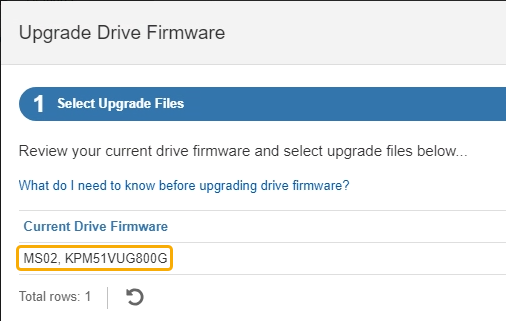
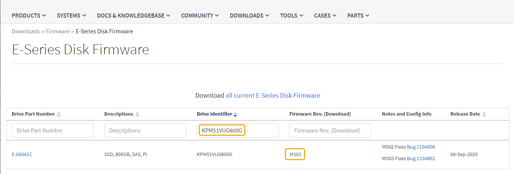
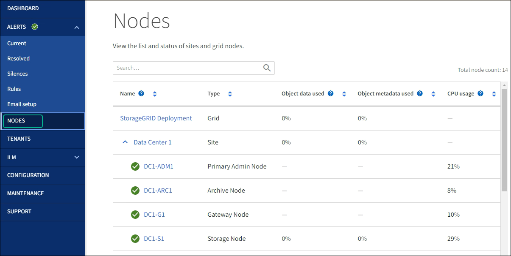

入门
入门
使用SANtricity系统管理器升级SG6000驱动器固件
 建议更改
建议更改
升级设备驱动器上的固件、以确保您拥有所有最新功能和错误修复。
-
存储设备处于最佳状态。
-
所有驱动器均处于最佳状态。
-
您已安装与您的 SANtricity 版本兼容的最新版本 StorageGRID System Manager 。
-
如果要执行脱机升级、则必须执行 "已将StorageGRID 设备置于维护模式"。

当设备处于维护模式时、存储控制器的I/O (输入/输出)活动将停止、以确保中断存储操作的安全。

|
请勿一次升级多个StorageGRID 设备上的驱动器固件。这样做可能会导致发生原因 数据不可用、具体取决于您的部署模式和ILM策略。 |
您可以使用两种方法升级设备驱动器固件：
联机：在设备执行I/O时，一次升级一个驱动器此方法不要求您将设备置于维护模式。但是、系统性能可能会受到影响、并且升级所需时间可能比脱机方法要长几小时。
|
|
对于不具有冗余的卷中的驱动器、必须使用脱机方法进行更新。与闪存读取缓存关联的任何驱动器(例如SG6060中的SSD驱动器)或当前已降级的任何池或卷组均应使用脱机方法。 |
脱机： 设备处于维护模式时、驱动器会并行升级。如果池或卷组不支持冗余或已降级、则必须使用脱机方法升级驱动器固件。只有在要升级的驱动器上的所有I/O活动都已停止时、脱机方法才会升级固件。要停止I/O活动、请将节点置于维护模式。
脱机方法比联机方法速度更快、当一个设备中的多个驱动器需要升级时、速度会显著加快。但是、它要求节点停止服务、这可能需要计划维护窗口并监控进度。选择最适合您的操作过程的方法以及需要升级的驱动器数量。
|
|
驱动器类型有两种：SSD和HDD。您必须使用脱机方法升级SSD上的固件(例如SG6060中的SSD驱动器)。您可以使用联机或脱机方法升级HDD上的固件。 |
-
如果要执行脱机升级、请确认此设备是否处于中 "维护模式"。
如果要升级缓存组中SSD驱动器中的固件、则必须确保在升级过程中不会向任何缓存卷发送任何I/O。如果设备处于维护模式、则在升级过程中不会向任何卷发送任何I/O。 -
使用以下方法之一访问 SANtricity System Manager ：
-
使用 StorageGRID 设备安装程序并选择 * 高级 * > * SANtricity 系统管理器 *
-
使用网格管理器并选择*N节点*>*_Storage N点SANtricity 系统管理器*
-
通过浏览到存储控制器IP来使用SANtricity 系统管理器：+
https://Storage_Controller_IP
-
-
如果需要，输入 SANtricity System Manager 管理员用户名和密码。
-
验证存储设备中当前安装的驱动器固件版本：
-
在 SANtricity 系统管理器中，选择 * 支持 * > * 升级中心 * 。
-
在驱动器固件升级下，选择 * 开始升级 * 。
升级驱动器固件页面将显示当前安装的驱动器固件文件。
-
请在当前驱动器固件列中记下当前驱动器固件版本和驱动器标识符。

在此示例中：
-
驱动器固件修订版为 * 。 MS02* 。
-
驱动器标识符为 * 。 KPM51 VVG800G* 。
-
-
在关联驱动器列中选择 * 查看驱动器 * ，以显示这些驱动器在存储设备中的安装位置。
-
关闭升级驱动器固件窗口。
-
-
下载并准备可用的驱动器固件升级：
-
在驱动器固件升级下，选择 * NetApp 支持 * 。
-
在NetApp 支持站点 上，选择*Downloads*选项卡，然后选择*E系列磁盘驱动器固件*。
此时将显示 E 系列磁盘固件页面。
-
搜索存储设备中安装的每个 * 驱动器标识符 * ，并验证每个驱动器标识符是否具有最新的固件版本。
-
如果固件版本不是链接，则此驱动器标识符的固件版本为最新。
-
如果为驱动器标识符列出了一个或多个驱动器部件号，则可以对这些驱动器进行固件升级。您可以选择任何链接来下载固件文件。

-
-
如果列出了更高版本的固件，请选择固件修订版中的链接(download)列以下载
.zip包含固件文件的归档。 -
提取（解压缩）从支持站点下载的驱动器固件归档文件。
-
-
安装驱动器固件升级：
-
在 SANtricity 系统管理器的驱动器固件升级下，选择 * 开始升级 * 。
-
选择 * 浏览 * ，然后选择从支持站点下载的新驱动器固件文件。
驱动器固件文件的文件名类似于+
D_HUC101212CSS600_30602291_MS01_2800_0002.dlp。您最多可以选择四个驱动器固件文件，一次一个。如果多个驱动器固件文件与同一驱动器兼容，则会收到文件冲突错误。确定要用于升级的驱动器固件文件，然后删除另一个驱动器固件文件。
-
选择 * 下一步 * 。
-
选择驱动器 * 列出了可使用选定固件文件进行升级的驱动器。
仅显示兼容的驱动器。
为驱动器选择的固件将显示在*建议的固件*列中。如果必须更改此固件，请选择 * 返回 * 。
-
-
选择要执行的升级类型：
升级SSD驱动器时、必须使用脱机方法。 -
在线升级所有驱动器—升级存储阵列处理I/O时可支持固件下载的驱动器如果选择此升级方法、则不必停止使用这些驱动器对关联卷的I/O。
联机升级可能比脱机升级需要几个小时。 -
将所有驱动器升级为脱机(并行)—仅当使用这些驱动器的任何卷上的所有I/O活动都停止时，才能升级支持固件下载的驱动器。
在使用此方法之前、您必须将设备置于维护模式。您应使用*Offline (脱机)*方法升级驱动器固件。
如果要使用脱机(并行)升级、请勿继续、除非您确定设备处于维护模式。如果在启动脱机驱动器固件更新之前未将设备置于维护模式、则可能会导致发生原因 数据丢失。 -
-
在表的第一列中，选择要升级的一个或多个驱动器。
最佳实践是，将所有相同型号的驱动器升级到相同的固件修订版。
-
选择*Start*并确认要执行升级。
如果需要停止升级，请选择 * 停止 * 。当前正在进行的所有固件下载均已完成。已取消所有尚未启动的固件下载。
停止驱动器固件升级可能会导致数据丢失或驱动器不可用。 -
（可选）要查看已升级内容的列表，请选择 * 保存日志 * 。
日志文件将保存在浏览器的下载文件夹中、并带有名称
latest-upgrade-log-timestamp.txt。如果在升级操作步骤期间出现以下任何错误，请采取适当的建议操作。
-
* 已分配的驱动器出现故障 *
出现此故障的一个原因可能是驱动器没有相应的签名。确保受影响的驱动器为授权驱动器。有关详细信息，请联系技术支持。
更换驱动器时，请确保更换驱动器的容量等于或大于要更换的故障驱动器。
-
您可以在存储阵列接收 I/O 时更换故障驱动器
-
* 检查存储阵列 *
-
确保已为每个控制器分配 IP 地址。
-
确保连接到控制器的所有电缆未损坏。
-
确保所有缆线均已紧密连接。
-
-
* 集成热备用驱动器 *
必须先更正此错误情况，然后才能升级固件。
-
* 卷组不完整 *
如果一个或多个卷组或磁盘池不完整，则必须更正此错误情况，然后才能升级固件。
-
* 当前正在任何卷组上运行的独占操作（后台介质 / 奇偶校验扫描除外） *
如果正在执行一个或多个独占操作，则必须先完成这些操作，然后才能升级固件。使用 System Manager 监控操作进度。
-
* 缺少卷 *
您必须先更正缺少的卷情况，然后才能升级固件。
-
* 任一控制器处于非最佳状态 *
其中一个存储阵列控制器需要注意。必须先更正此情况，然后才能升级固件。
-
控制器对象图形之间的存储分区信息不匹配 *
验证控制器上的数据时出错。请联系技术支持以解决此问题描述。
-
* SPM 验证数据库控制器检查失败 *
控制器上发生存储分区映射数据库错误。请联系技术支持以解决此问题描述。
-
* 配置数据库验证（如果存储阵列的控制器版本支持） *
控制器上发生配置数据库错误。请联系技术支持以解决此问题描述。
-
* 与 MEL 相关的检查 *
请联系技术支持以解决此问题描述。
-
* 在过去 7 天内报告了 10 个以上的 DDN 信息性或严重 MEL 事件 *
请联系技术支持以解决此问题描述。
-
* 过去 7 天报告了 2 页以上的 2C 严重 MEL 事件 *
请联系技术支持以解决此问题描述。
-
* 过去 7 天报告了 2 个以上的 " 降级驱动器通道 " 严重 MEL 事件 *
请联系技术支持以解决此问题描述。
-
* 过去 7 天内 4 个以上的关键 MEL 条目 *
请联系技术支持以解决此问题描述。
-
-
如果您使用的是*脱机*升级，并且此操作步骤 已成功完成，请在节点处于维护模式时执行任何其他维护过程。完成后，或者如果遇到任何故障并希望重新启动，请转到StorageGRID 设备安装程序并选择*Advanced*>*Reboot Controller*。然后选择以下选项之一：
-
*重新启动至StorageGRID。
-
重新启动至维护模式。重新启动控制器并使节点保持维护模式。如果在操作步骤 期间发生任何故障、并且您要重新启动、请选择此选项。节点重新启动至维护模式后，从出现故障的操作步骤 中的相应步骤重新启动。
设备重新启动并重新加入网格可能需要长达 20 分钟的时间。要确认重新启动已完成且节点已重新加入网格，请返回网格管理器。节点页面应显示正常状态(绿色复选标记图标)
 节点名称左侧)、表示没有处于活动状态的警报、并且节点已连接到网格。
节点名称左侧)、表示没有处于活动状态的警报、并且节点已连接到网格。

-